Use bookdown to build your notes
使用bookdown搭建你的笔记
1 利用bookdown轻松将笔记部署到自己的网站
问题由来： 有时想要将笔记发布到独立的网站上让认识的朋友看，却又不懂如何部署网站，让人非常难受。
本文将手把手教你如何使用Rmarkdown以及R包bookdown写“书”，并通过github轻松部署到自己的Github pages上！ 首先摆出我自己的简单案例：气候数值模拟笔记。他在网站上长这样：
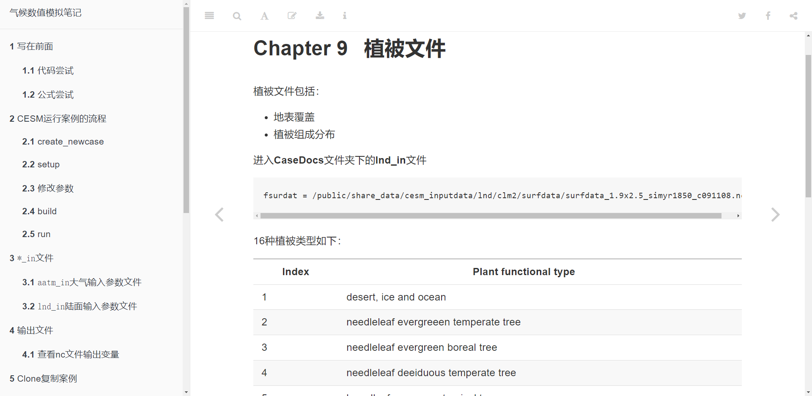
1.1 准备工作
在开始之前，需要确认已经安装好R1 、Git2 以及Rstudio3。 此外，需要安装本文的核心R包bookdown，可以通过在R中运行以下代码进行安装：
install.packages('bookdown')
# 如果想使用开发版本
# install.packages('pak')
pak::pak('rstudio/bookdown')1.2 创建笔记
1.2.1 创建project
在Rstudio中点击File->New Project->New Directory->Bookproject using bookdown->Create Project
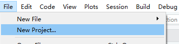 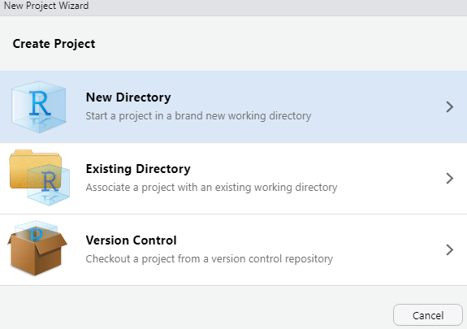 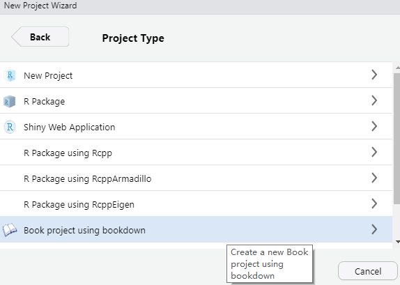 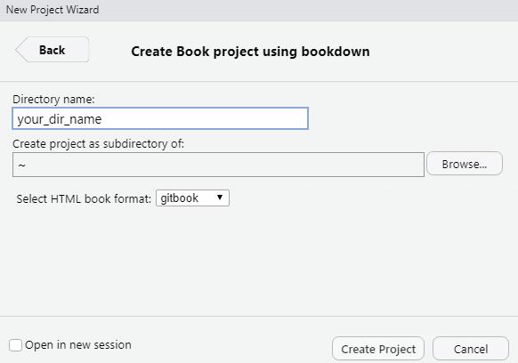
在进行完上述操作后，我们就进入到新建的book项目中了，生成的文件如下：
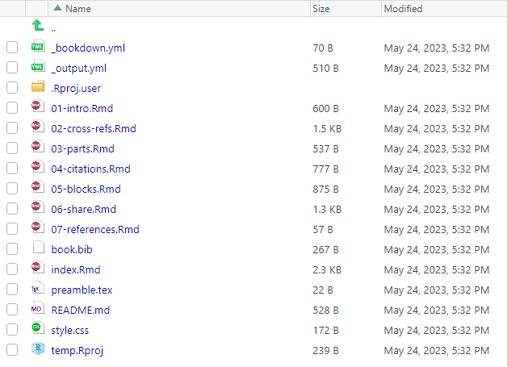
1.2.2 修改和预览笔记
在生成的文件中，index.Rmd是笔记的首页，而其它如01-intro.Rmd的文件是笔记的其它部分。预览笔记的方式有两种：
- 点击
index.Rmd脚本上方的Knit按钮 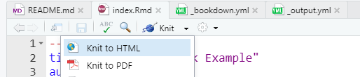 - 点击
Build->bookdown::gitbook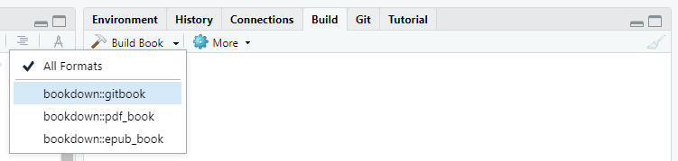
我们选择第二种预览方式，预览以后就可以看到示例笔记了，基本与网页上的呈现方式一致。
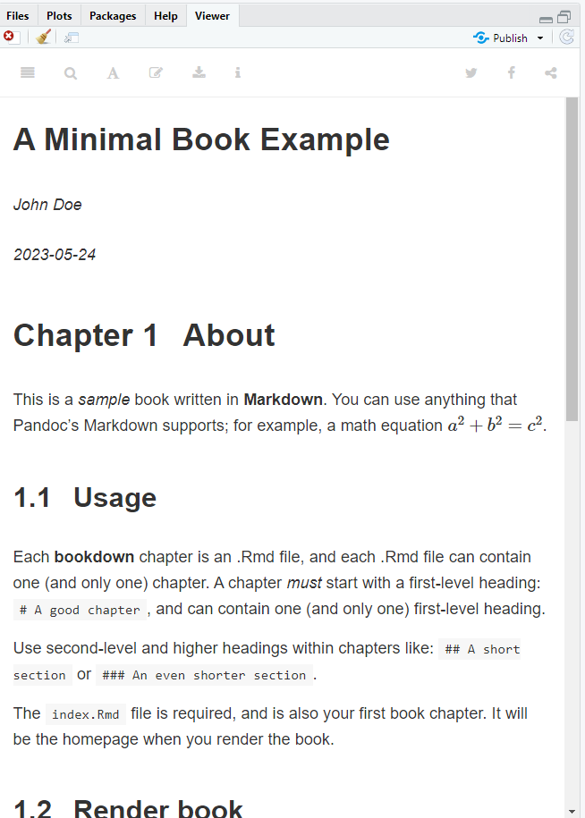
可以看出，除index.Rmd中的内容出现在第一页外，笔记其它部分按照笔记文件排序出现。 掌握基本的操作以后，我们就可以利用markdown性质进行编辑你的笔记了！文章末尾附Rmarkdown教程4。
1.3 部署到Github pages
1.3.1 创建仓库
为了将笔记放置在网上，我们首先在github上新建一个空仓库：
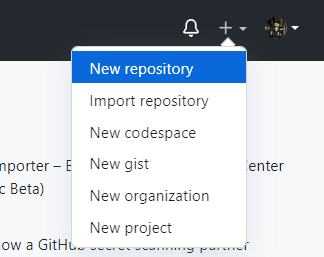
1.3.2 生成文件
首先，我们需要在_bookdown.yml文件中添加一行参数
output_dir: "docs"在添加完这行参数后，重新Build一下我们的笔记，在项目中就会生成一个docs文件夹，里面是我们笔记相关的文件。
1.3.3 上传文件
在生成我们需要的文件后，我们需要将这个项目上传至我们在github上新建的项目中。 1. 在本地初始化git环境。在项目文件夹路径下右键Git Bash Here，输入以下代码： shell git init 2. 链接远程github仓库。输入以下代码： shell git remote add origin git@github.com:<your_github_name>/<your_repo_name>.git 3. 上传项目文件。分别输入一下三行代码： shell git add --all # 上传全部文件 git commit -m '备注信息' git push origin master 做完这些，在网站上刷新你的项目仓库，就可以看到这些文件已经传入仓库中了！
1.3.4 部署网页
最后一步，我们需要在仓库中修改一些设置。 在仓库中点击Settings->Pages修改branch为docs文件夹：
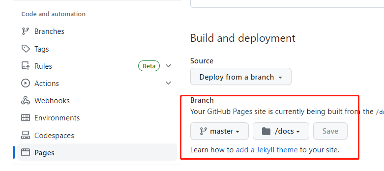
然后回到仓库code页面，点击右侧About右方的设置按钮，链接网页：
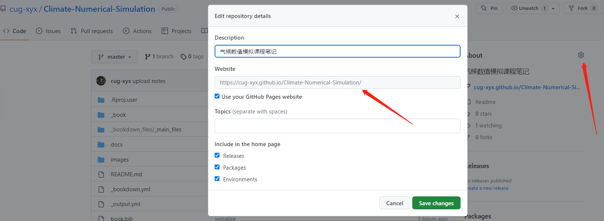
当保存这些更改后，等待一段时间，进入About中显示的网页，就可以看到我们的笔记了。
1.4 最后
如果这篇文章对你有帮助，那就点个赞吧~